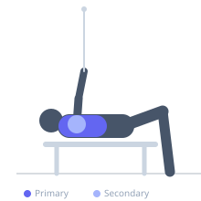
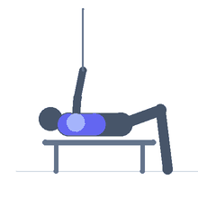

Exercise guide / Decline Cable Flye
Decline Cable Flye
The decline cable flye isolates the lower and sternal portions of the pectoralis major using a cable machine set at a low pulley angle combined with a decline bench. By lying on a decline bench and pressing handles from a low cable angle, the arc of motion closely matches the lower fiber direction of the pectoralis major, creating targeted stretch and contraction.
Primary muscles
pectoralis major sternal
Secondary muscles
deltoid anterior
Stabilizers
infraspinatus
triceps long head
Equipment
Cable Machine (Dual Pulley / Functional Trainer)
Adjustable Bench (Incline / Decline)


Starting position
- Position a decline bench between two low cable pulleys. Lie on the bench with feet secured. Hold a cable handle in each hand, arms extended to sides at approximately chest level, with a slight bend in the elbows.
Setup
- Set both pulleys to the lowest position. Attach single-grip handles. Position the decline bench so that the cables create a low-to-inward pull angle when you lie on it.
Steps
- Step 1: Lie on the decline bench with arms extended out to the sides, slight elbow bend, handles gripped with palms facing up.
- Step 2: Drive both handles upward and inward in a wide arc, maintaining the same elbow angle.
- Step 3: Bring handles together above your lower chest, squeezing the pectorals at peak contraction.
- Step 4: Slowly lower the handles back to the starting position, feeling the stretch across the lower chest.
Coaching cues
- Pretend you are hugging a large tree
- The elbows never change their angle — only the shoulder joint moves
Breathing
- Exhale as you bring the handles together. Inhale during the return phase.
Range of motion
- Open arms to full stretch at the bottom (cable level), close to full adduction at the top. Avoid hyperextension at shoulder.
Tempo
- 3-1-2-1 (3s open, 1s stretch pause, 2s close, 1s squeeze)
Common mistakes
- Bending the elbows too much and converting to a pressing motion
- Allowing the arms to drop below the bench level, overstressing the shoulder
- Using too much weight, compromising the arc of motion
Safety
- Keep elbows slightly bent and fixed — do not straighten or flex them during the rep
- Secure feet firmly on the decline bench to prevent sliding
Training
- hypertrophy: 10–15 reps
- endurance: 15–20 reps
- hypertrophy: 3–4 sets
- endurance: 2–3 sets
- Rest: {'hypertrophy': 75, 'endurance': 45}